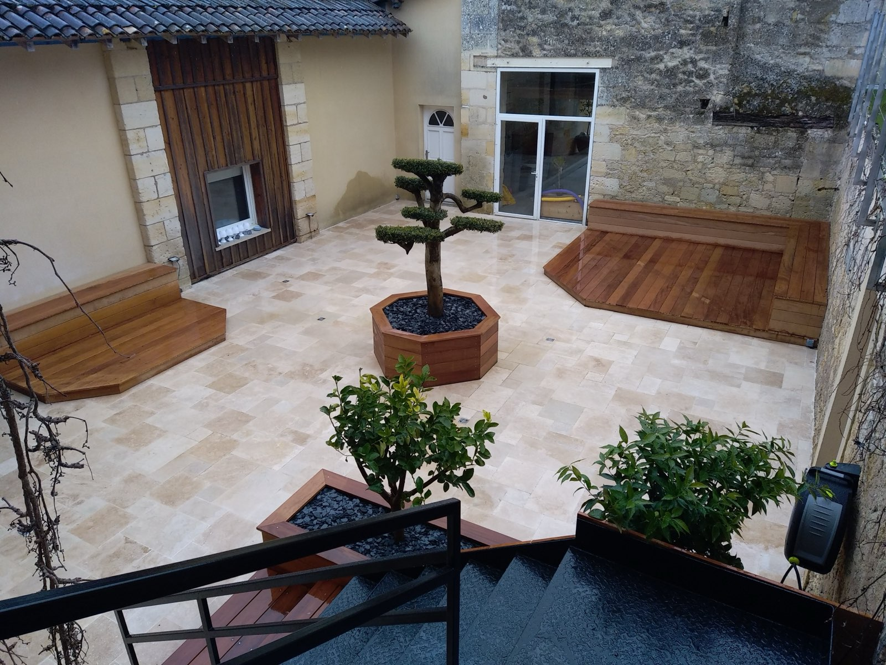
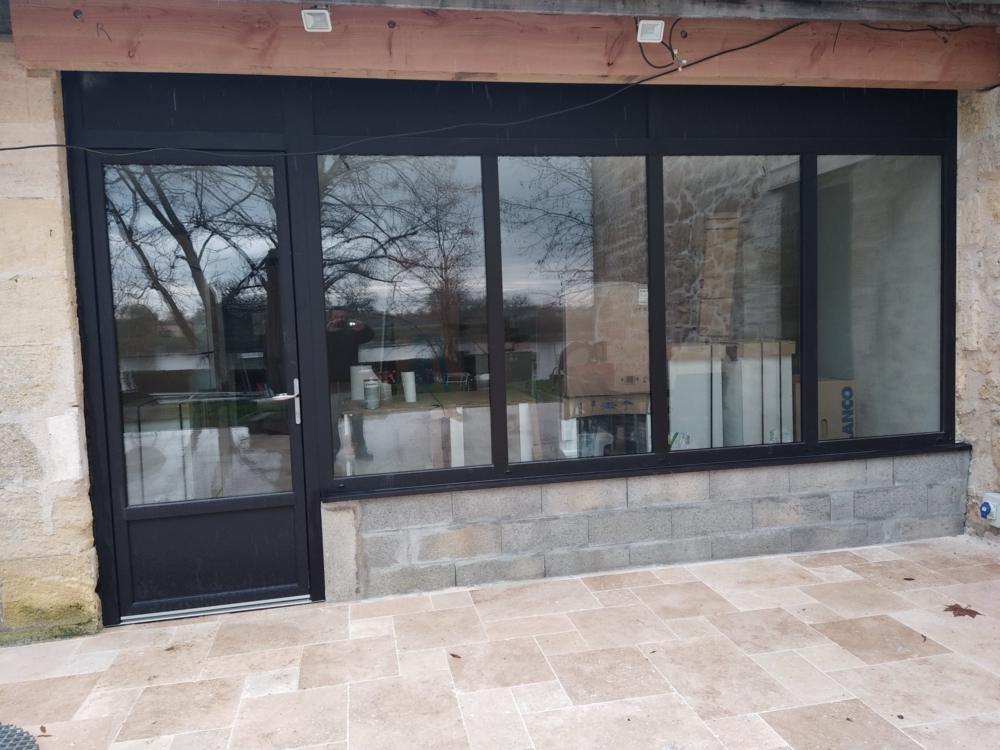
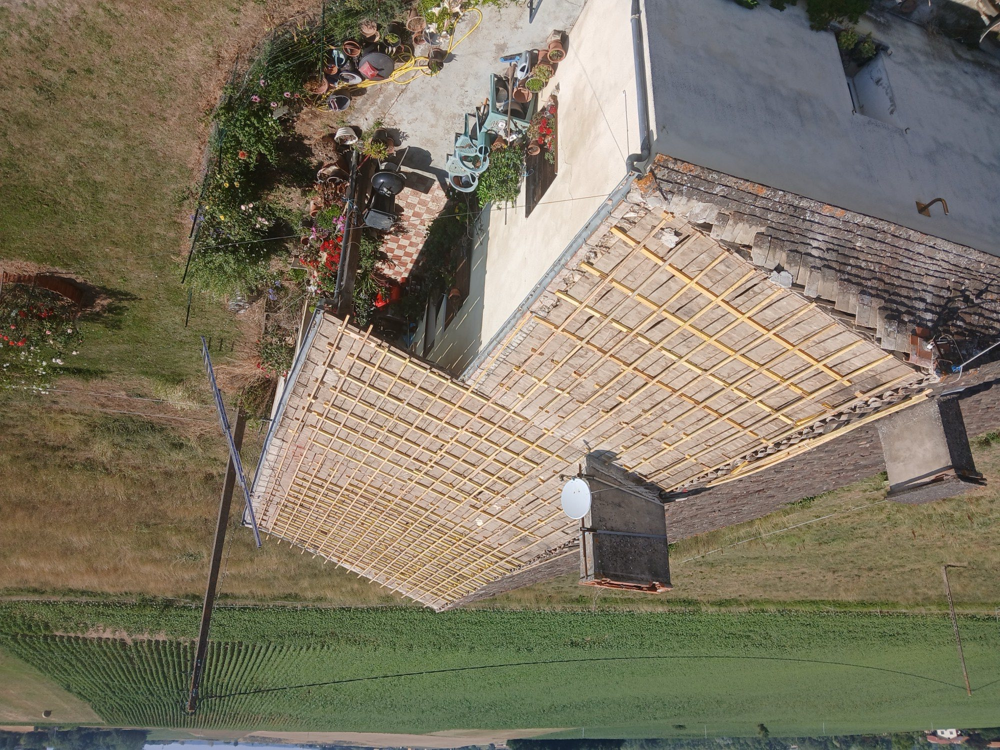
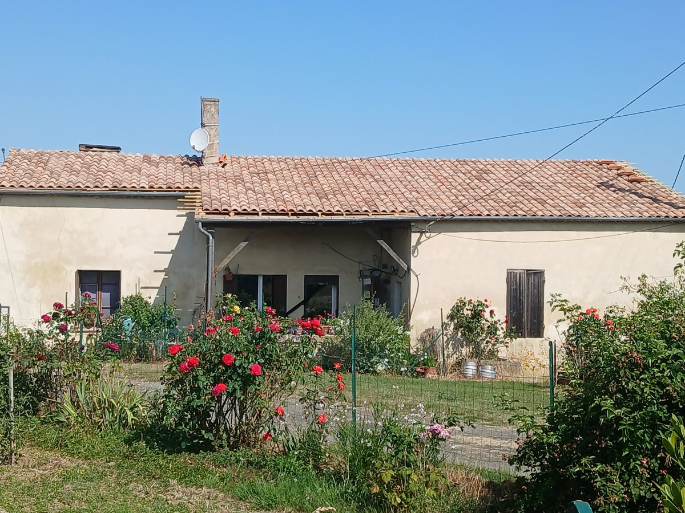

Yannick Florent, charpentier, couvreur et menuisier aux Esseintes en Gironde







Charpentier depuis 1996, je mets près de trente ans de passion et d'expérience au service de votre habitat. Spécialiste de la charpente, de la couverture, de la rénovation et de l'ossature bois, j'accompagne chacun de mes clients avec la même ligne de conduite.
Perfectionniste et rigoureux, je réalise vos projets de vie.
Je façonne des structures solides qui portent l'empreinte de mon savoir-faire et de mes mains.
Terrasses sur mesure en bois exotique (Garapa), tours de piscine et escaliers : des aménagements durables, pensés pour vous ressembler.
Charpente traditionnelle et américaine, ossature bois, couverture et rénovation, ainsi que l'isolation et l'aménagement de vos combles.
Pose de menuiseries aluminium, PVC et bois et de volets roulants, fabriqués en France, pour des finitions soignées et une isolation optimale.
De la conception à la réalisation, je donne vie à vos projets extérieurs et intérieurs.
Spécialiste de l'aménagement sur mesure, je mets mon savoir-faire au service de vos espaces pour créer des structures uniques qui vous ressemblent. Qu'il s'agisse de sublimer votre jardin ou d'optimiser votre intérieur, chaque projet est pensé et exécuté avec la plus grande précision.
Je réalise notamment vos terrasses en bois exotique (Garapa) sur mesure, un matériau noble et durable qui apporte un cachet incomparable à vos extérieurs. Mon expertise s'étend également à la conception et à la pose de :
Confiez-moi vos idées, et transformons ensemble votre habitat.
Du neuf à l'ancien, je conçois, bâtis et protège votre toit avec des structures pensées pour durer.
Chaque chantier est unique et mérite une attention millimétrée. Que ce soit pour du neuf ou pour préserver le charme de l'ancien, je maîtrise l'ensemble des techniques indispensables à la durabilité de votre toit :

Parce que le confort de votre maison passe aussi par sa performance énergétique, je m'engage pour l'avenir. Soucieux de l'environnement, je vous propose des solutions d'isolation naturelle hautement performantes :
Vos combles cachent peut-être le plus beau potentiel de votre habitation. Confiez-moi la mise en valeur de vos combles pour leur transformation en pièces de vie chaleureuses, confortables et baignées de lumière.
Qu'il s'agisse de créer une suite parentale, un bureau ou un espace de jeux, je concrétise vos envies en optimisant chaque mètre carré sous votre toit.
Spécialiste de la pose de menuiserie aluminium, PVC et bois, j'assure également l'installation de vos volets roulants en aluminium (manuels, électriques ou solaires).
Soucieux de vous offrir la meilleure qualité, les menuiseries proposées sont exclusivement de fabrication française, conçues localement au RPI à Sauveterre-de-Guyenne.
J'exerce un métier sur mesure où la précision est de rigueur, afin de vous garantir des finitions impeccables et une isolation optimale pour votre habitat.
Bénéficiez de l'expérience d'un artisan qualifié et passionné pour bâtir, rénover ou isoler votre foyer. Contactez-moi dès aujourd'hui pour étudier ensemble vos besoins.